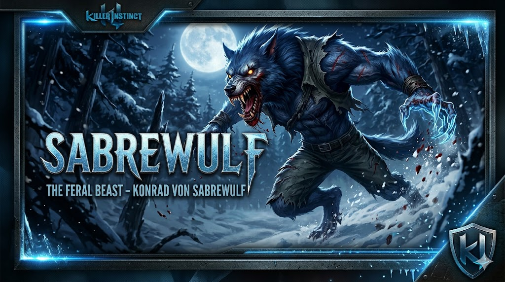
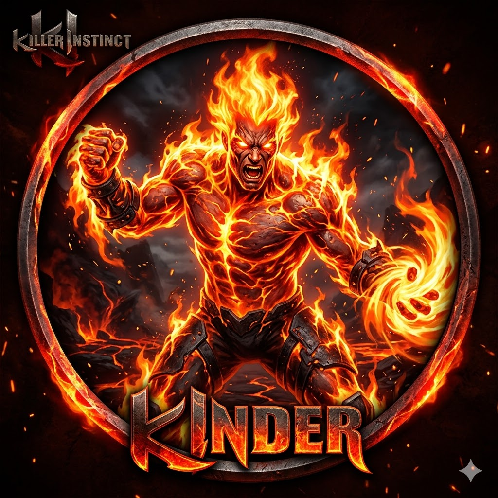
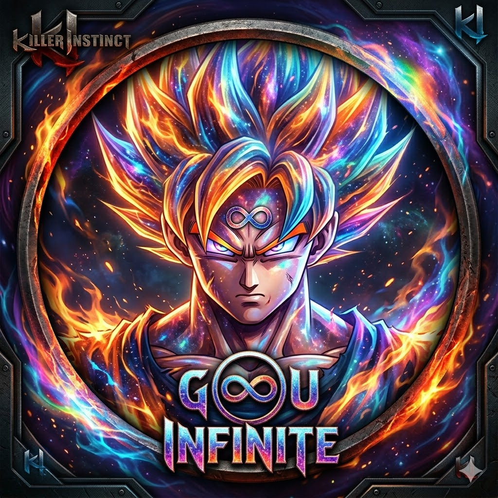

Landing corporativa
Diseño limpio y navegación clara para presentar una marca con confianza.
Ver másExplora los proyectos creados con estructura y estilo, desde páginas de presentación hasta experiencias web interactivas.

Diseño limpio y navegación clara para presentar una marca con confianza.
Ver más
Estructura ordenada para mostrar productos, detalles y llamadas a la acción destacadas.
Más detalles
Cada proyecto se construye con archivos independientes, recursos públicos centralizados y componentes visuales que siguen la paleta de colores corporativa.